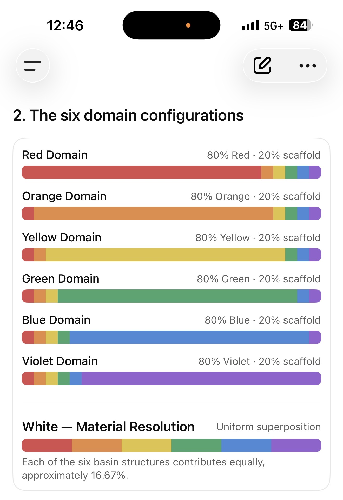
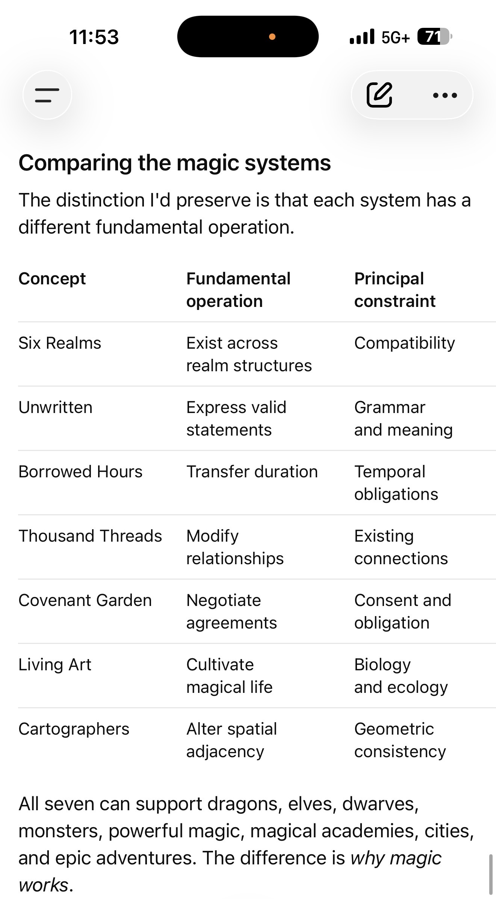
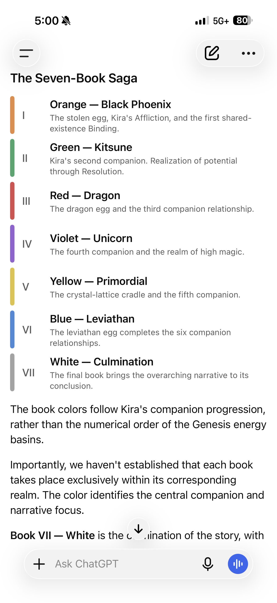
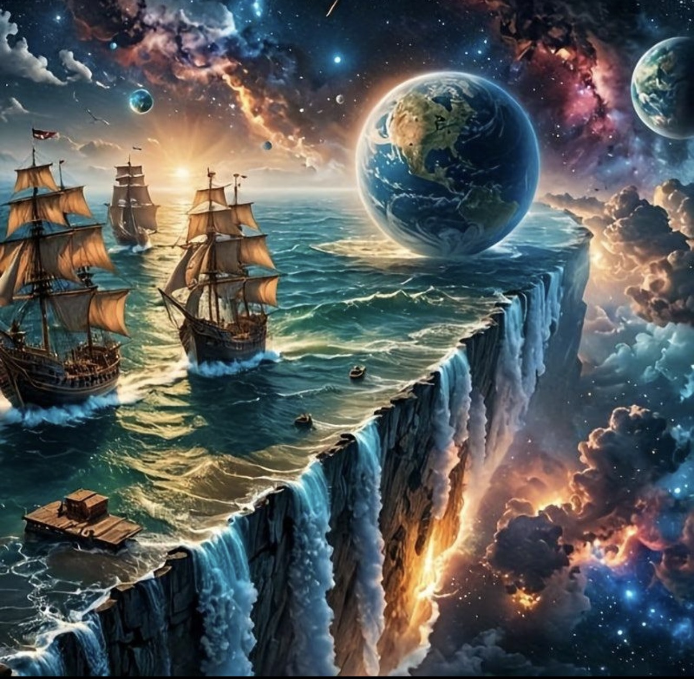

The Six Selected Leviathans

Selected 1 Abyssal Crown, 3 Tidevault, 5 Skyweaver, 6 Stormmantle, 8 Cloudbreaker, 13 Horizon Leviathan; seventh undecided.
The Horizon Leviathan — Selected Fractal Spine

Variation #8, Fractal Spine, is the selected visual. Moving/persistent/vanishing continuum remains a conceptual rule, not a fully specified operator.
Earlier Horizon alternatives — history

Earlier #9 Vanishing Continuum favored; supplanted by second sheet #8 as final image.
Rejected Worldback study

Former proposed candidate #10 explored and explicitly rejected.
Dragon humanoid female — corrected

Fit/trim/muscular, no tail; prior overly voluptuous renders rejected.
Phoenix humanoid female

Featherlike fine hair and plumage; image labels are noncanonical.
Primordial humanoid female

3 inorganic, 3 organic, 3 process illustrations, not nine locked subraces.
Kitsune humanoid female

One physical tail; eight Genesis projection echoes; no spirit-based magic.
Unicorn humanoid female

Angular exotic symmetry, trim forms, modest projected horn; visual approximation.
Seven-domain 80/20 composition

Author screenshot of structural composition; independent from 1/7 through 6/7 energy scale.
Seven Foundations original table

Historical Six Realms entry becomes Seven Realms. Original operations and constraints remain.
Book and companion color order

Orange, Green, Red, Violet, Yellow, Blue, White.
Reference setting — cosmic cliffs

Visual inspiration only: ships and floating planets excluded from native geography.